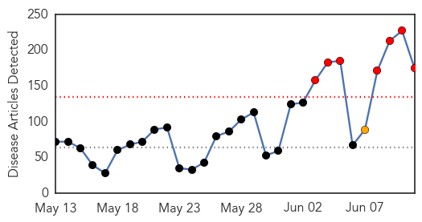
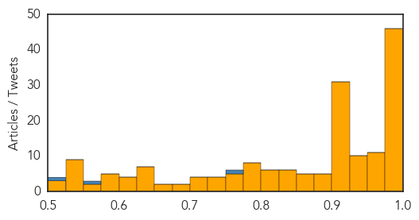

Unknown
30-Day Web Trend
7 alerts, 1 warnings

30-Day Twitter Trend
5 alerts, 6 warnings

Article Locations

Article Confidences
Top Articles:
- 1.000
- MERS outbreak hurting South Korea's tourism, economy
- 1.000
- The Philippine Online Chronicles
- 1.000
- CDC Issues Health Advisory Amid Deadly MERS Outbreak
- 1.000
- CDC Issues Health Advisory Amid MERS Outbreak
- 0.999
- ’122 infected with MERS in South Korea’
- 0.999
- Hong Kong Tests Two for MERS Virus as Panic Reaches Fever Pitch
- 0.999
- MERS forces total sealing off of two hospitals-INSIDE Korea JoongAng Daily
- 0.998
- MERS Is No Reason to Close Schools, WHO Tells S. Korea
- 0.998
- S. Korea reports tenth MERS death, continues to spread – The Korea Times
- 0.998
- MERS death toll rises to 10
- 0.998
- Park defers US trip as Mers toll hits nine
- 0.998
- MERS outbreak forces S. Korea to cut key interest rates
- 0.998
- Park postpones US trip as South Korea MERS death toll hits nine
- 0.998
- S. Korean MERS cases rise to 122
- 0.997
- Malaysia General Business Sports and Lifestyle News
- 0.997
- MERS claims 10th victim in South Korea as panic reaches pet owners
- 0.997
- South Korea Reports 31 People Have Died From MERS Outbreak So Far
- 0.997
- South Korean MERS cases rise to 122
- 0.997
- MERS Outbreak Exposes Weaknesses in South Korean Health Care
- 0.997
- (LEAD) S. Korea reports 14 new cases of MERS, bringing total to 122
- 0.997
- Infections rise to 122 with 14 new MERS cases
- 0.996
- MERS outbreak delays S Korean President Park Geun-hye’s US trip
- 0.996
- 1st outpatient contracts MERS
- 0.996
- South Korea MERS outbreak
- 0.996
- S. Korea reports 4 more MERS cases, bringing total to 126
- 0.996
- (2nd LD) S. Korea reports 14 new cases of MERS, bringing total to 122
- 0.995
- Woman tests negative for Mers after panic in Hong Kong, Government & Economy
- 0.995
- The World On Arirang
- 0.995
- The Chosun Ilbo (English Edition): Daily News from Korea
- 0.994
- South Korea confirms new MERS cases
- 0.994
- Woman tests negative for MERS after panic in Hong Kong, news, Health News, AsiaOne YourHealth
- 0.994
- S. Korea reports 14 new cases of MERS, bringing total to 122
- 0.993
- Woman tests negative for MERS after panic in Hong Kong
- 0.992
- MERS forces South Korea to cut key interest rate
- 0.990
- South Korea reports rise of 14 MERS cases to 122
- 0.990
- Scientists confident of China's MERS preparation - Xinhua
- 0.989
- Beijing warns of MERS risk Beijing news, English news, latest beijingnews,www.bjd.com.cn
- 0.989
- S. Korea reports 10th death from MERS virus
- 0.989
- WHO Urges S. Korea to Reopen Schools Closed over MERS Virus
- 0.989
- MERS infections rise to 122, 1 Chinese infected in S. Korea - Xinhua
- 0.988
- The Economist
- 0.988
- Interview: Hospital system needs overhaul for MERS: WHO official - Xinhua
- 0.985
- Amid panic, a chance to learn about MERS
- 0.985
- MERS infections rise to 122, 1 Chinese infected in S. Korea
- 0.983
- MERS claims another life, rate of infection is slowing
- 0.981
- Tsing Yi MERS suspect sparks panic reaction
- 0.975
- Tempo - News in a Flash
- 0.973
- Hong Kong reports 4 suspected cases of Mers at clinics for first time, East Asia News & Top Stories
- 0.971
- How Vaccinating Millions Of Camels In The Middle East Might Stop The Deadly Virus
- 0.969
- One of four suspected Mers cases at Hong Kong clinics tested negative, East Asia News & Top Stories
Showing top 50 articles...
Top Tweets:
- 0.775
- RT: 14 new MERS cases in S Korea: "Authorities.. have yet to determine where 5 of the patients contracted the virus" http:/…
- 0.723
- 14 new MERS cases in S Korea: "Authorities.. have yet to determine where 5 of the patients contracted the virus" http://t.co/8eyavJ5uhP
- 0.670
- MERS Outbreak 2015: How Vaccinating Millions Of Camels In The Middle East Might Stop The Deadly Virus http://t.co/TxwCdAAphv
- 0.569
- RT: 14 more MERS cases announced this morning in Korea. Total now 122 cases. 8 of the new cases from Samsung Hospital. http://t.co…
- 0.568
- What's up with the ridiculous headlines? "MERS virus spreading across Asia, South Korea fails to contain outbreak." Really??
Pertussis
30-Day Web Trend
0 alerts, 0 warnings
30-Day Twitter Trend
0 alerts, 0 warnings

Article Locations
Article Confidences
Top Articles:
Top Tweets:
-
No tweets found for Jun 11, 2015